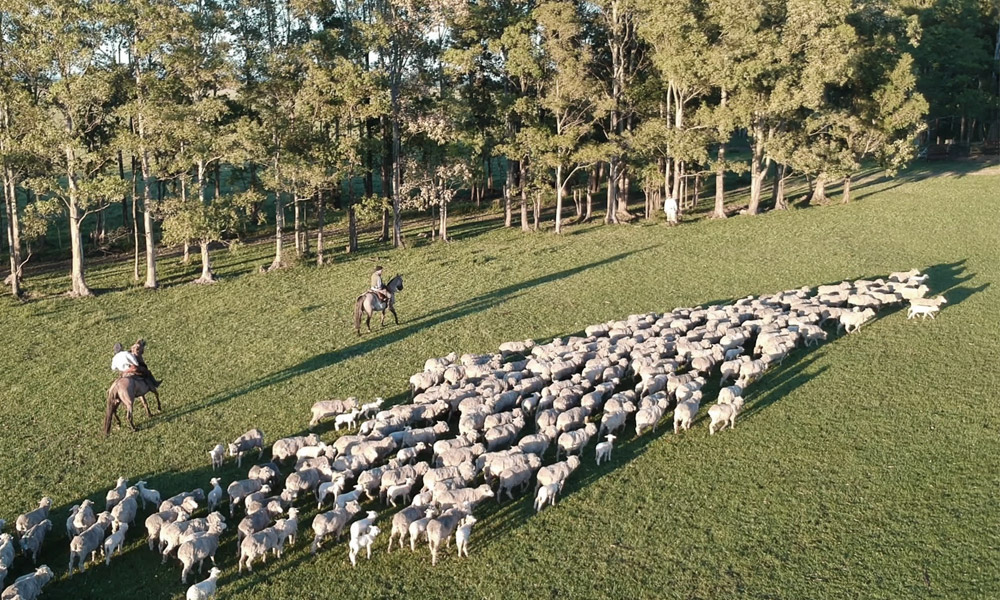

Discover the legacy of Walmart Mussel, pioneers in eco-friendly wool top manufacturing and sustainable textile solutions since 1951.
This is why we developed our own certification that combines a premium product with the tranquility of knowing that their origin respects and care for animals and the environment.
"Every wool top certified under Origen stands for ethical farming, complete supply chain transparency, and a deep commitment to environmental stewardship."

Genuine love for our sheep that live in accordance with the 5 freedoms and are free of mulesing procedures. Mulesing is not practiced in Uruguay since it is not justified by climatic or sanitary reasons.
Environmental responsibility throughout the entire manufacturing process. We process our wool tops using 98% renewable energy under Carbon Neutral Certification and OEKO-TEX Certification.
Social responsibility toward the local towns, families, and all workers and communities involved in our supply chain.
Fully traceable routes that connect the final consumer back to the exact land and farm where the sheep were lovingly raised.
Exceptional quality achieved through the combination of healthy sheep breeds, technological innovation, and the perfect blend of long-standing experience and passion.